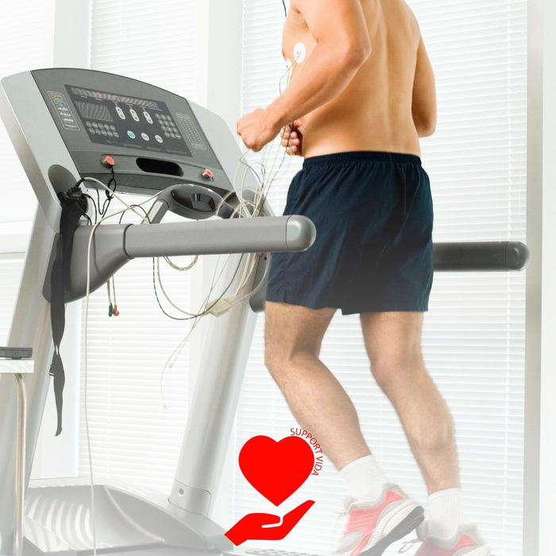
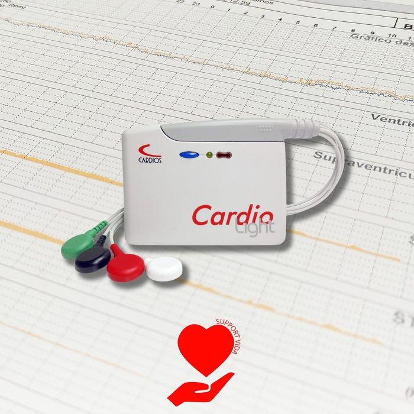
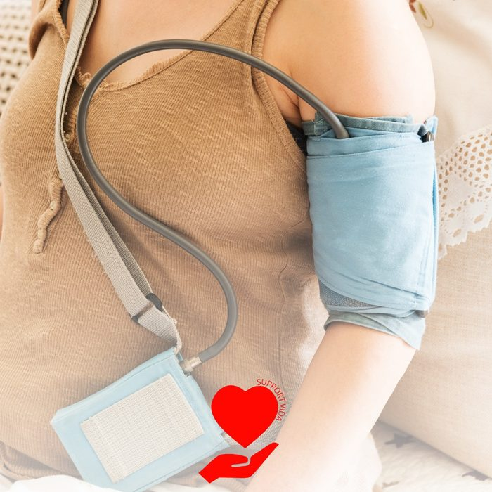
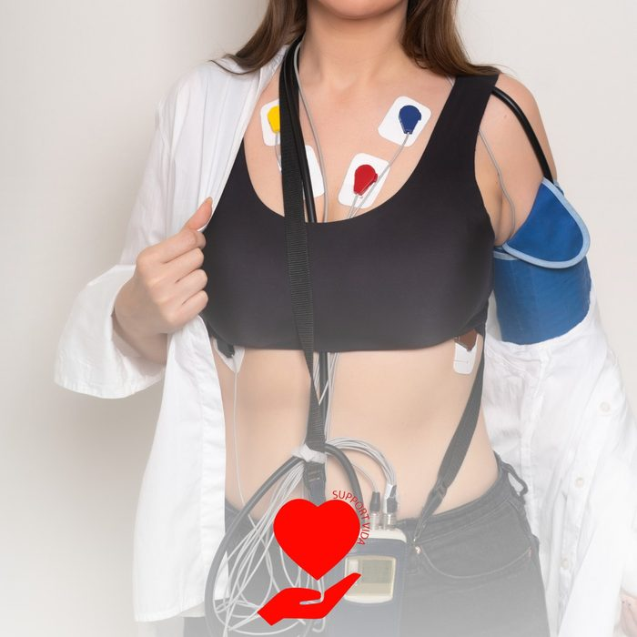
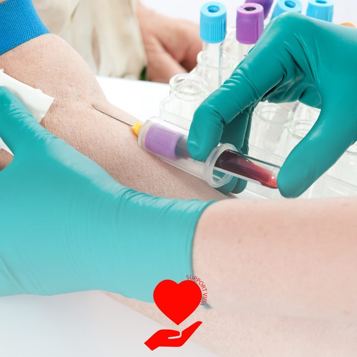
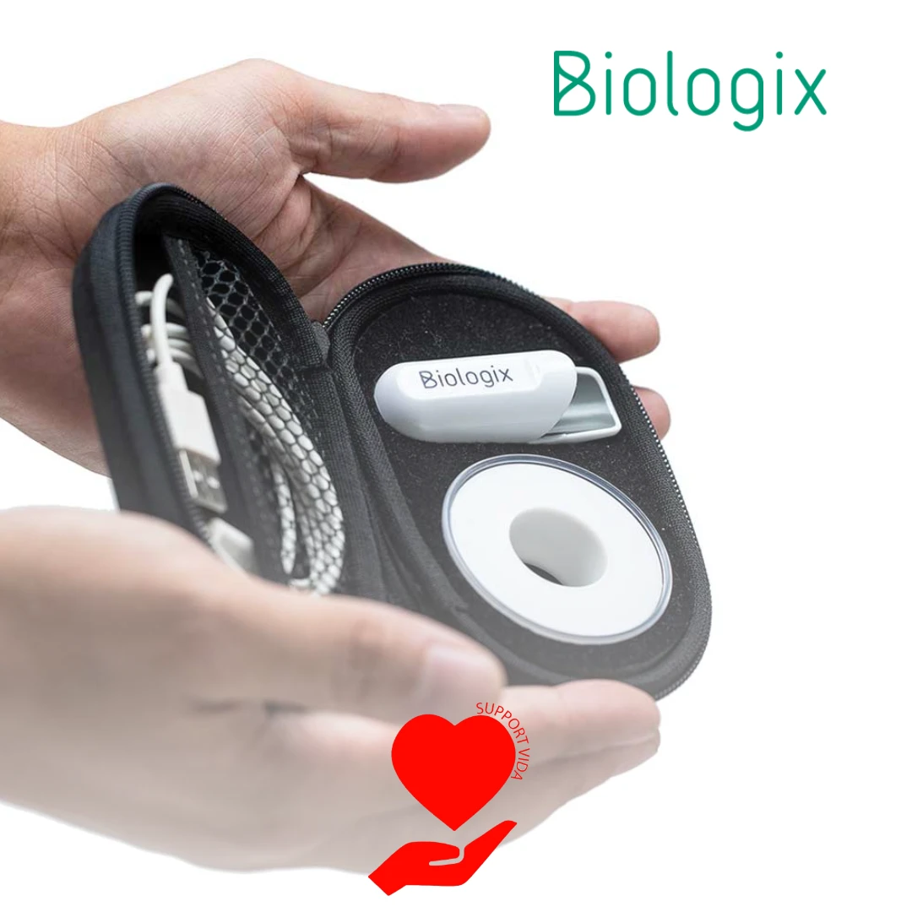

Nossos serviços
Saiba mais sobre os atendimentos e exames realizados em nossa clínica. Valores sob consulta.
Cardiologia
Avaliação cardiológica completa, com investigação da saúde do coração e do sistema cardiovascular.
Clínica Geral
Atendimento clínico geral para queixas do dia a dia e acompanhamento de saúde.
Avaliação pré-operatória
Liberação cardiológica exigida antes de cirurgias e procedimentos invasivos.
Avaliação de aptidão física
Liberação cardiológica para a prática segura de atividades físicas e esportes.
Eletrocardiograma (ECG)
Exame que registra impulsos elétricos emitidos pelo coração por meio de eletrodos nos punhos, tornozelos e tórax. Detecta ritmo e frequência cardíaca, possibilitando o diagnóstico de vários problemas cardíacos.
Duração: 15 minutosLaudo: digital no mesmo dia; impresso no dia seguinte
Como se preparar
- Não precisa de jejum.
- No dia, evite passar creme, óleo ou hidratante no peito, nos braços e nas pernas (atrapalha a fixação dos eletrodos).
- Prefira roupa fácil de abrir na frente; evite vestido, meia-calça e cinta.
- Retire correntes, relógio e outros objetos de metal antes do exame.
- Traga a lista dos remédios que você usa.
Não suspenda nenhum remédio por conta própria. Em caso de dúvida, fale com a gente pelo WhatsApp.

Teste ergométrico
Avalia a saúde do coração durante esforço físico controlado. Através de caminhada ou corrida em esteira, monitora frequência cardíaca, pressão arterial e outros sinais vitais.
Duração: 30 minutosLaudo: digital no mesmo dia; impresso no dia seguinte
Como se preparar
- Não venha em jejum: faça uma refeição leve até 2 horas antes.
- Não consuma café, chá preto ou mate, chocolate, refrigerante de cola ou energético nas 12 horas anteriores.
- Não fume nas 3 horas antes do exame.
- Venha de roupa confortável para caminhar e tênis (não é possível fazer de chinelo, sandália ou descalço). Mulheres: top ou sutiã e blusa fácil de tirar.
- Não passe creme ou óleo no peito. Homens com muitos pelos no peito podem precisar de raspagem nos pontos dos eletrodos.
- Evite exercício intenso no dia e procure dormir bem na noite anterior.
- Alguns remédios do coração podem ser suspensos antes do exame somente se o médico que pediu orientar. Quem usa insulina ou remédio para diabetes deve confirmar a dose do dia com o médico.
- Traga o pedido médico, exames anteriores e a lista dos remédios. Chegue 15 minutos antes.
Não suspenda nenhum remédio por conta própria. Em caso de dúvida, fale com a gente pelo WhatsApp.

Holter 24h
Monitora a atividade do coração por 24 horas, detectando e registrando a variação do ritmo cardíaco durante as atividades diárias, incluindo o sono. Evidencia arritmias, distúrbios de condução, bloqueios e outros problemas.
Instalação: 15 minutos, depois 24 horas com o aparelhoLaudo: em 2 dias úteis
Como se preparar
- Tome banho antes de vir: não é possível tomar banho com o aparelho nas 24 horas.
- Não passe creme ou óleo no peito.
- Venha com camisa larga, de preferência de botão na frente. Mulheres: sutiã sem partes de metal ajuda a prender os cabos.
- Mantenha a rotina normal no dia (trabalho, caminhada leve, sono): o exame registra o coração no dia a dia.
- Anote no diário que você recebe o horário de cada sintoma (palpitação, tontura, falta de ar, dor no peito) e das principais atividades.
- Continue os remédios de sempre, a não ser que o médico oriente diferente. Traga a lista.
- A retirada é no dia seguinte, no horário combinado na instalação. Por isso, não instalamos na sexta-feira.
Não suspenda nenhum remédio por conta própria. Em caso de dúvida, fale com a gente pelo WhatsApp.

MAPA 24h
Monitorização Ambulatorial da Pressão Arterial: exame importante no diagnóstico da Hipertensão Arterial e na avaliação da eficácia do tratamento, capturando variações da pressão ao longo do dia e da noite.
Instalação: 15 minutos, depois 24 horas com o aparelhoLaudo: em 2 dias úteis
Como se preparar
- Tome banho antes de vir: não é possível tomar banho com o aparelho.
- Venha com camisa larga ou de manga curta, que não aperte o braço.
- Evite exercício físico no dia anterior e durante o exame. Mantenha as demais atividades normais.
- Quando o manguito começar a inflar, pare, deixe o braço relaxado e estendido ao lado do corpo e não fale até terminar. Ele infla sozinho várias vezes ao dia e durante a noite.
- Evite dormir sobre o braço do aparelho.
- Anote no diário os horários de remédios, refeições, sono e qualquer sintoma (tontura, dor de cabeça, mal-estar).
- Tome os remédios normalmente, a não ser que o médico oriente diferente.
- A retirada é no dia seguinte, por isso não instalamos na sexta-feira.
Não suspenda nenhum remédio por conta própria. Em caso de dúvida, fale com a gente pelo WhatsApp.

HolterMAPA 24h
Com o aparelho CardioMAPA é possível realizar os exames de Holter 24h e MAPA 24h no mesmo dia, proporcionando mais conforto e praticidade ao paciente.
Instalação: 15 minutos, depois 24 horas com o aparelhoLaudo: em 2 dias úteis
Como se preparar
- Tome banho antes de vir: não é possível tomar banho com o aparelho.
- Não passe creme ou óleo no peito e venha com camisa larga, de botão na frente.
- Quando o manguito inflar, deixe o braço relaxado e estendido ao lado do corpo e não fale até terminar. Evite dormir sobre esse braço.
- Mantenha a rotina normal e anote no diário os sintomas, os remédios e as principais atividades, com horário.
- Evite exercício físico no dia anterior e durante o exame.
- Continue os remédios de sempre, a não ser que o médico oriente diferente.
- A retirada é no dia seguinte, por isso não instalamos na sexta-feira.
Não suspenda nenhum remédio por conta própria. Em caso de dúvida, fale com a gente pelo WhatsApp.

Exames laboratoriais
Análises clínicas que envolvem a análise de amostras biológicas (sangue, urina e fezes), fornecendo dados sobre diversos aspectos fisiológicos e bioquímicos do organismo.
Resultado: de 5 a 10 dias corridos, conforme o exame
Como se preparar
- O jejum depende dos exames pedidos. Siga sempre o que está no pedido médico ou o que combinarmos pelo WhatsApp.
- Glicemia de jejum, insulina e ferro: em geral 8 horas de jejum (água é liberada).
- Colesterol e triglicerídeos: desde 2016, o consenso brasileiro dispensa o jejum na maioria dos casos, salvo se o médico pedir.
- Hemoglobina glicada (HbA1c) não precisa de jejum.
- Evite álcool e exercício intenso nas 24 horas anteriores.
- Traga o pedido médico e um documento.
Não suspenda nenhum remédio por conta própria. Em caso de dúvida, fale com a gente pelo WhatsApp.

Polissonografia tipo IV
Exame do sono feito com o aparelho portátil Biologix tipo IV, no conforto da sua casa. Avalia apneia do sono e outros distúrbios respiratórios que impactam diretamente a saúde cardiovascular.
Duração: uma noite em casa (mínimo de cerca de 4 horas de sono)Devolução do kit: no dia seguinte, das 9h às 12hLaudo: no mesmo dia da devolução
Como se preparar
- Você leva o sensor para casa e faz o exame na sua cama, dormindo normalmente.
- Antes, instale o aplicativo Biologix no celular e deixe o celular carregado e com Bluetooth ligado durante a noite.
- Coloque o sensor no dedo indicador na hora de dormir e inicie o exame pelo aplicativo; ao acordar, finalize pelo aplicativo.
- Retire esmalte escuro, unha postiça ou gel do dedo do sensor (podem atrapalhar a leitura do oxigênio).
- Evite bebida alcoólica e cafeína à noite e não mude sua rotina de remédios sem orientação médica.
- Devolva o kit no dia seguinte, das 9h às 12h. Por isso, não fazemos o exame na sexta-feira.
Não suspenda nenhum remédio por conta própria. Em caso de dúvida, fale com a gente pelo WhatsApp.